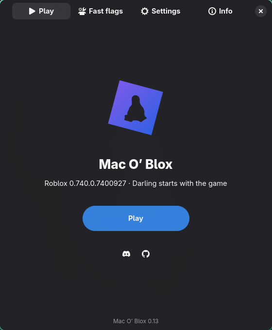

The Roblox you know.
Sign in to your account, find your friends, and jump into your experiences with the real macOS client.
SAME ACCOUNT. SAME GAMES.Your games. Your account. Your desktop.
Run the macOS Roblox client on Linux with Mac O’ Blox.


A familiar client.
A different operating system.
Mac O’ Blox runs Roblox’s macOS client through Darling, then fills in the missing pieces: graphics, mouse input, sound, networking, and a launcher to tie it together.
Sign in to your account, find your friends, and jump into your experiences with the real macOS client.
SAME ACCOUNT. SAME GAMES.Mouse capture, camera controls, sound, and microphone support connect the client to your Linux desktop.
BUILT AROUND YOUR DESKTOPAdjust UI scale, fast flags, DNS, cursor and sound mods, or turn on MangoHud to see how things run.
YOUR SETUP. YOUR SETTINGS.The source launcher can install the Windows version of Roblox Studio in its own Wine environment.
PLAY SOMETHING. MAKE SOMETHING.OpenGL and X11 / Xwayland are the defaults. Vulkan through Zink and Native Wayland are experimental. The pause after leaving a game is still being worked on.
Read the release notesInstall Mac O’ Blox, open it from your app menu, and let the first-time setup guide prepare Roblox.
The installer explains the packages it needs and asks before installing them. Run it again to update; your settings and sign-in stay in place.
curl -fsSL https://raw.githubusercontent.com/aubree-lat/MacOBlox/main/install.sh | bashThe Flatpak includes Darling and uses its own Roblox sign-in. Studio isn’t included in this package yet.
Download Flatpak · 0.19Use the command above or the Flatpak bundle.
Mac O’ Blox downloads and prepares Roblox.
Quick Login is an easy way to bring your account over.
An x86_64 Linux desktop with working graphics drivers. The source installer supports Arch and its relatives, Ubuntu 24.04+, Debian 13, and Linux Mint 22. Fedora needs Darling built from source. Check the installation guide for the dependencies.
No. Darling provides the environment for the macOS client on Linux. Mac O’ Blox downloads Roblox and prepares it for that environment.
Use Roblox’s Quick Login: enter the code from the client on a phone or browser where you’re already signed in. Password sign-in and captcha pages use the launcher’s browser window.
Wayland desktops can run the default X11 backend through Xwayland. Vulkan rendering currently uses Mesa Zink to translate OpenGL. Native Wayland is an opt-in experiment; full client presentation is unfinished. Direct client Vulkan is not available.
Yes. Mac O’ Blox is MIT licensed. The original project was created by Narezany; this version is maintained by aubree.wtf. Browse the code, report issues, or contribute on GitHub.
Found a bug? Have an idea? There’s room for you here.